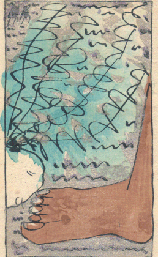
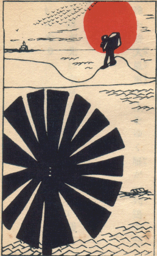
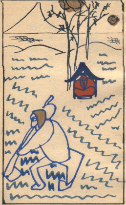
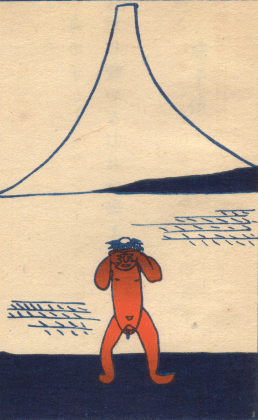

［＃ページの左右中央］
きらら。 雲母。うんも。玉 のたぐひにて、五色 のひかりあり。深山 の石 の間 にいでくるものにて、紙 をかさねたるごとくかさなりあひて、剥 げば、よくはがれて、うすく、紙 のやうになれども、火 にいれてもやけず。水 にいれてもぬるゝことなし。和名（雲母和名、［＃改行］岐良々）
『日本大辞林』
［＃改ページ］
［＃ページの左右中央］
［＃改ページ］
大きなる手があらはれて昼深し上から卵をつかみけるかも
かなしきは春画の上にころがれる七面鳥の卵なりけり
大鴉一羽渚に
大鴉一羽地に下り昼深しそれを眺めてまた一羽来し
昼渚人し見えねば大鴉はつたりと
大鴉
一羽飛び二羽飛び三羽飛び四羽五羽飛び大鴉いちどに飛びにけるかも
大空の
水の
水の面に光ひそまり昼深しぬつと海亀息吹きにたり
日ざかりは巌を動かす
ふかぶかと
大空に何も無ければ入道雲むくりむくりと湧きにけるかも
［＃改丁］
［＃ページの左右中央］
［＃改ページ］
大正二年一月二日、哀傷のあまりただひとり海を越えて三崎に渡る。淹留旬日、幸に命ありてひとまづ都に帰る。これわが流離のはじめなり。
雪深し
思ひきや霧の
朝霧にかぎり知られぬみをつくしかぎりも知らぬ恋もするかな
朝霧に光りゆらめくみをつくしいまだ死なむと吾が思はなくに
日だまりに光りゆらめく
寂しさに浜へ
寂しさに男三人浜に
八景原の崖に揺れ揺るかづらの葉かづら日に照るあきらめられず
小牛ゐて薊
来て見ればけふもかがやくしろがねの沖辺はるかにゆく
日が照る海がかがやく鰯船
あまつさへ日は麗らかに枯草のふかき匂ひもひもじきかなや
日の光ひたと声せずなりにけり何事か沖に事あるらしや
ただひとつ
空赤く海また赤し
雲雀啼く浦の
何かしら笑ひ泣きする心なり野菜畑に鰯ころがる
来て見れば鰯ころがる
日暮るれば枯草山の枯草をただかきわけていそぐなりけり
夕されば涙こぼるる
おめおめと生きながらへてくれなゐの山の椿に身を
夕暮の余光のもとをうち案じ空馬車馭してゆく馭者のあり
屋根の
夕されば大川端に立つ煙重く傾むく風吹かむとす
悲しくも思かたむけいつとなくながれのきしをたどるなりけり
風寒く夕日
夕さればひとりぽつちの杉の樹に日はえんえんと燃えてけるかも
あかあかと枯草ぐるまゆるやかに夕日の野辺を
悲しともなくてなつかしかがやかに夕日にかへる枯草ぐるま
道のべの
日は暮れぬ人間ものの誰知らぬふかき
［＃改丁］
［＃ページの左右中央］
［＃改ページ］
大正二年四月下浣、家をあげて三崎向ヶ崎に移る。
水あさぎ空ひろびろし吾が父よここは
深みどり海はろばろし吾が母よここは
ほがらかに
わがこころ
ある時
大きなる櫓櫂かついで不尽の山眺め見わたす男なりけり
れいろうと
ある時は
ある時は命さびしみ新らしき
ある時は
ある時は
ある時は巣藁代へむとせしかどもその巣に卵のうまれてありけり
ある時は赤々と日のそそぎやまぬ
ある時は何も思はず路のべの
ある時は遠眼鏡もて
ある時は小さき
ある時はおのが
ある時は誰知るまいと思ひのほか人が山から
ある時はただ
生きの身の吾が身いとしみ牛の
生きの身の吾が身いとしも鯛釣るとけふも岬の
生きの身の吾が身いとしくもぎたての青豌豆の
生きの身の吾が身いとしみしくしくと腐れ
［＃改丁］
［＃ページの左右中央］
［＃改ページ］
水垂の松のかげゆくあはれなり麗らなる日のべら釣り
城ヶ島の白百合の花大きければ仰ぎてぞあらむあそびの舟は
大きなる匍ひ下り松の枝の上漣かがやき鳥ひとつゐる
海雀つらつらあたまそろへたり光り消えたり漣見れば
この憎き男たらしがつつじの花ゆすり動かしていつまで泣くぞ
恐ろしき淵のまはりを海雀光り
かき抱けば本望安堵の笑ひごゑ立てて目つぶるわが妻なれば
帰命頂礼この時遥か海雀光りめぐると誰か知らめや
帰命頂礼消えてまた照る海雀人は目をとぢ幽かにひらき
帰命頂礼誰し知らねば海雀耀きの輪をつくりまた
しんしんと淵に
いつまでも淵に
この淵にひそみて久し潜りの子親の子なれば玉藻刈るらむ玉藻刈るらむ
恋しけどおゆき思はず
人なればわれもまことに憔悴す蓴菜光れこの沼深く
蓴菜を掬へば
明るさや寥しさや人も来ず裸になれど泣くすべ知らずも
寂しけどおのれ耀き
驚きてつくづく見れば鰻なり一面に光る沼のまんなか
この沼ゆなにか湧きあがる恐ろしき光ある見て逃げ上るわれは
照りかへる
流れかね
日ざかりは
寂しけど何も思はずこの
わが
日の光いつぱいに照る眼鏡橋誰か越えむとする眼鏡橋
眼鏡橋に西瓜断ち割る西瓜売今ぞ
眼鏡橋の眼鏡の中から眺むれば柳
寂しけど麦稈帽子ゆ照りこぼるる夏の光を
寂しけど煌々と照るのぼり坂ただ
幅びろの光なだるるなだら坂動くばかりに見えにけるかも
崖の上に照りてゆらめくものひとつ大いなる百合と見て通りたり
寂しさに油壺から
寂しさに山の真昼の赤鳥居深くくぐりてまた
草ふかき切りそぎ崖に大きなる男寝て居る寂しきものか
鵜の鳥と共に飛ばむとしたりしか鵜の鳥飛ばんとして飛びてゆく
飛びかける鳥につかまれ
飛びかける鳥魚をつかみあはれあはれ輝きの空に
しみじみと海のはたてに見し煙いつのまにやら大船となる大船となる
いつまでも向う向きたる人の頭いよよ光ればいよよ憎しも
城ヶ島の
城ヶ島の女子うららに裸となり鮑取らいで何
うつらうつら海を眺めてありそうみの女子裸となれりけるかも
蛸壺に蛸ひとつづつひそまりてころがる畑の
深々と人間笑ふ声すなり谷一面の白百合の花
真白なるところてんぐさ干す男
なにしかも
ひとり来て涙落ちけりかきつばたみながら萎み夏ふかみかも
明るけどあまり
真白にぞ輝りてさびしきかきつばた白き犬つれ見にと吾が
あはれなる
さんさんと海に
ちちのみの父を裸になしまゐらせ泳ぎにとゆくその子が
寂しければ
抜手を切り
［＃改丁］
［＃ページの左右中央］
［＃改ページ］
しんしんと寂しき心起りたり山にゆかめとわれ山に来ぬ
この心
狐のかみそり血の出づるやうな思して踏みてゆかねば入日が赤し
狐のかみそりかたまりて赤し然れどもひとつびとつに風吹けりけり
狐のかみそりしんしんと赤し然れどもかたまりて咲けば
毒ある赤き狐のかみそりは悲しき馬に食ましてかな
註、馬この花を食らへば死す
ただひとり鴉殺すとはばからず紅く踏みしく狐のかみそり
淫らにして恒心なきもの
原つぱに狐のかみそりただ赤しわつとばかりに逃げ出すわれは
海にゆかばこの寂しさも忘られむ海にゆかめとうちいでて来ぬ
漕ぎいでてあはれはるばる
われと櫓をわれと
一心に舟を漕ぐ男
北斎の
飛の魚強くはばたき
飛の魚
躍り入りひとり泳げばしみじみと寂しき魚の臍突きに来ぬ
泳げば底より足をひくものあり人間の足をひくものあり
大きなる人あらはれて目の前に不意に舟漕ぐうれしさうれしさ
炎々と入日目の前の大きなる静かなる帆に燃えつきにけり
はてしなくおほらにうねる海の波暮れてひもじき夜となりにけり
舟とめてひそかに
はてしなき海の真中に舟をうけ泣くに泣かれずわれは
我は烏賊釣る
あなあはれ人間闇の海にゐて
赤硝子戸ぴつたりと
赤硝子戸ぴつたりと
日の光いつぱいに
赤硝子
 腐れ
腐れ赤硝子戸、赤き卵の
赤硝子
庭前小景
かぢめ舟けふのよき日にうちむれていちどきにあぐる棹のかなしも
春過ぎて夏来るらし
日は麗ら
日の光そこにかんかん真四角の氷の角は照らされにけり
天を見て膨れかがやく
青芝にそつと放せば昼深み
ゆつたりと蒲団の綿は干されたり
しみじみと水にひたせど真珠貝遂に水をも吸はざりにけり
庭前小景
鰻籠はぢぎれむばかりゆららゆらら日をいつぱいに
籠の中につまる鰻の
思ひあまり躍りゆらめく鰻籠ぢつと抑ゆるこころなりけり
庭もせにくれなゐふかき松葉菊鰻飛び超えゆくへ知らずも
紅き花をかきわけて見れば鰻の児隅にとろりと居たりけるかも
松葉菊ふかく紅けば鰻の児安心をして動かざりにけり
花の中に抑へられたり鰻の児
庭前小景
寂しさに海を覗けばあはれあはれ
動かねどをりをり光る
寂しさに手足動かす
庭前小景
石崖に子ども七人腰かけて河豚を釣り居り夕焼小焼
二本づつ鯖を投げ出す二本の手そろうて光りてありにけるかも
桟橋にどかりと
しんしんと夕さりくれば城ヶ島の
舟漕ぎ寄せ沖の
わが父を深く怨むと鰻籠蹴りころばしてゐたりけりわれ
櫂おつとり舟に飛び下りむちやくちやに漕ぎまはる赤き赤き夕ぐれ
城ヶ島の燈明台にぶん廻す
城ヶ島さつとひろげし
大日輪落ちつきはらひ伊豆の
赤々と十五夜の月海にありそこに泳げる人ひとり見ゆ
［＃改丁］
［＃ページの左右中央］
［＃改ページ］
病床吟
波つづき
網高く干せるその
見廻せどたへて人こそなかりけれ海の漣ただ光り消え
日もすがら光り消えたりうねり波思ひ出したりまた忘れたり
鳥とまり光りゆらめく
音もなき海のかたへの麗らなるわが
音もなき真夏昼なか音もなく鳥は雁木を去りにけるかも
麗らかや
漣の上にちらばるさざなみのうへのつり舟見れど飽かなく
漣の光りかがやく昼深しぽんと林檎を棄てにけるかも
うつらうつら海に舟こそ音すなれいかなる舟の通るなるらむ
しみじみと海に雨ふり
城ヶ島のさみどりの
北斎の簑と笠とが時をりに
海の中に光り輪を
漕ぎつれていそぐ釣舟
通り矢と城ヶ島辺にふる雨の
大きなる
目を
薔薇の木に薔薇の花咲くあなかしこ何の不思議もないけれどなも
風くれば薔薇はたちまち火となれり
驚きてわが身も光るばかりかな大きなる
ただ見ればこれかりそめの薔薇の花驚きて見ればその花動く
薔薇の花うちゆるがむとせしかども思ひかへしつますます光り
大きなる何事もなき薔薇の花ふとのはづみにくづれけるかも
日の光い照りかへせばくれなゐに
燃えあがる急須つらつらそれの息をそばの茶碗に
急須燃えそしてまろらに茶碗ゐるこの親しさの限り知られず
日ぐらし急須と茶碗とさしむかひ泣くが如しもその湯気立てば
ふつふつと
いついかに
急須燃え茶碗湯気ふくそれよりもなほ温かきなからひにして
思ひあまり急須と茶碗と人知れずそがひに
盆の上に急須ありまた茶碗ゐるここの世界も安からなくに
［＃改丁］
［＃ページの左右中央］
［＃改ページ］

［＃改ページ］
大きなる足が
畑に出でて見ればキヤベツの玉の
しんしんと湧きあがる力新らしきキヤベツを
さ緑のキヤベツの
大きなる
ふと見つけて難有きかもさ緑の野菜のかげの大きな片足
重々と
麦藁帽子野菜の反射いつぱいに受けて西日にかがみてあるも
積藁のかげむくむく湧きあがるパイプの煙見つつ真赤な日にあたり居り
秋の田の稲の刈穂の新藁の積藁のかげに誰か居るぞも
寂しけば娘ひきよせこの男力いつぱいに抱きぬるかも
日ざかりの黒樫の木の南風素つ裸なる
畑に飛んで
道のべの
豚小屋に
豚小屋の上の棕梠の木の裂葉より日は八方に輝きにけれ
大きなる白の泥豚照りかがやき
いぎたなき豚のいびきのともすれば霊妙音に歌ふなりけり
泥豚のあはれな鼾日もすがら雁来紅をゆすりてあるも
逞ましき
棕梠の木に人攀ぢのぼり棕梠の木の赤き毛をむく真昼なりけり
棕梠の木のしみ輝る
白豚の精の
豚小屋は寂し下ゆく路赤く
激しく
ひとかたまり豚の児が
生めよ
五郎作よしんじつ
夕日が赤し餌をやれ五郎作けだものは饑うれば糞も
寂しきにか豚は豚どちしみじみと入日に起きて
片岡に粟と豆とが赤ちやけて深くささやく
しみじみと豆をもぎれば豆の声夕日照り沁み秋の丘べに
あかき日の光の中に
はや秋深く
夕日赤し小犬しみらに
青木に犬の
目の前にしんじつかかる
何といふ
枯草の籠のなかなる赤ん坊が大きなる馬に乗りてゆきにけり
秋高しくゐいくゐいりりりと鳴く鳥の声は野山をけふかけめぐる
［＃改丁］
［＃ページの左右中央］
［＃改ページ］
三日の月ほそくきらめく
三日の月真の闇夜にあらねども真の闇夜よりさらにさみしも
ほのかなる人の言葉に
三日の月谷底見れば
闇の夜に躍り出でたる金無垢の
闇の夜にうまれ落ちたる猫の児があはれあはれ猫の声すもよいま
闇の夜に猫のうぶごゑ聴くものは
何事か為さでかなはぬ願湧く海の夜ふけの闇のそよかぜ
闇の夜も
戸あくれば金無垢の月いま走る幽かに暗きそよかぜの
闇の海に金無垢の月いとほそくかげうつしほのに消えにけるかも
闇ふかしひとりひそかに寝ざめして思ふはおのがいのちなりけり
空暗く入海暗し海よりも黒き島見え松動く見ゆ
一心に島と
小夜ふけて夜のふけゆけばきりぎりす黒き
昼見てし黒き花瓶のありどころあやめもわかね夜の闇の中
小夜ふけて黒き花瓶の
天の河棕梠と棕梠との間より幽かに白し
耳澄ませば闇の
棕梠二本ここの夜天の吾が声は幽かなれども偽れなくに
何物の澄みて流るる知らねどもここの夜天の光ふかしも
あなかしこ棕梠と棕梠との間より閻浮檀金の月いでにけり
［＃改丁］
［＃ページの左右中央］
［＃改ページ］
かげ曇る岸の葉柳時をりに深くかがやくなほ堪へられず
漣さざなみ何が憂しとて
千鳥ゐるされどあかるきさざなみの銀無垢光に
水の辺に光りゆらめく河やなぎ木橋わたればわれもゆらめく
橋をわたりつくづくおもふこれぞこのいづこより来し水のながれか
三角と豆々の葉の木が二本舟が一艘さざなみの列
とま舟の苫はねのけて北斎の
照りかへる銀のさざなみ河やなぎ白き月さへその上に見ゆ
はろばろに波かがやけば堪へがたしぴんと一匹釣りにけるかな
銀のごと時にひろごる網の目はこれ
蘆と蘆幽かに銀のさざなみを立ててかこちぬ今日も暮れぬと
鳥の声黒樫の木の照り
遠丘の向うに光る秋の海そこにくつきり人鍬をうつ
岬見え向うの海とこなたの海光りかがやくこなたは暗く
丘の上に海見え海に岬見えその上の海に舟いそぐ見ゆ
朝出でてゆき遥けかりあま小舟
大空に銀の点々ちらばるはあまのつり舟櫓を漕げるなり
この岬行き尽すまで急がむと思ひきはめて吾が辿るなり
金いろに光りてほそき磯はなのその一角に日の消えんとす
網の目に
うしろより西日
駿河なる
赤き日に
海の波光り重なり日もすがら光り重なりまた暮れにけり
木々の
谷底に人間のごと恋しきは
煙立つ
帆をかけて心ぼそげにゆく舟の
金の星このもかのもの
松並木中に一点寂しきは
大きなる赤き
引橋の茶屋のほとりをいそぐときほとほと秋は過ぎぬと思ひき
あなあはれ日の消えがたの水ぎはに枯木一本赤き夕ぐれ
かくのごとき秋の寂しさわれ愛す枯木
秋の色いまか極まる声もなき人豆のごと橋わたる見ゆ
人はいま
一心に遊ぶ子どもの声すなり赤きとまやの秋の夕ぐれ
藁屋ありはねつるべ動く水の
けつけつと鳴くは何鳥あかあかと
金の星ひとつ消えゆく思なり童子幽かに御寺に
［＃改ページ］

［＃改ページ］
油壺から
夕焼小焼
赤々と夕日廻れば一またぎ向うの小山を人
油壺しんととろりとして深ししんととろりと底から光り
［＃改丁］
［＃ページの左右中央］
［＃改ページ］
巡礼と野の
ひさかたの
巡礼がほのかなる
照りかへる金柑の木がただひと木庭にいつぱいに日をこぼし居り
はるばると金柑の木にたどりつき巡礼
巡礼が金柑の木をふりあふぐ
かくなれば金柑の木も
かうかうと金柑の木の照るところ巡礼の子はひとりなりけり
照りかへる金柑の木のかげを出で巡礼すなはち鈴ふりにけり
まかがやく金柑の木の蔭に立ち黒き土くれ人掘りかへす
人ふたり光りよろめく金柑の
さくさくと大判小判の音すなれ金柑の木の根かたを掘れば
この畑の金柑のかげで云ふことをよくきいてくれそれなる娘
かうかうと今ぞこの世のものならぬ金柑の木に秋風ぞ吹く
吹く風はせちに心をかきむしる人間界のわれならなくに
いつしかに金柑の木と身をなして吹く秋風に驚くわれは
夕されば
ここに来て梁塵秘抄を読むときは
西方に金の
かうかうと金の射光の
夕されば金の煙の立つごとく木はかうかうとよろめきにけり
金色の木をかうかうと見はるかすこれは枯野の草刈り男
金色のかの木のかげに照りかへり動くものあり人にはあらじか
樹はまさしく千手観音菩薩なり西金色の秋の夕ぐれ
かうかうと風の吹きしく夕ぐれは金色の木木もあはれなるかな
見るからに秋のあはれに吹きしくは金色の木の嵐なりけり
こなた向き木々のかなしくいたぶるは金色の風の吹けばなりけり
なほしばし我を忘れて金色の木々のかなたを飛ぶよしもがな
［＃改丁］
［＃ページの左右中央］
［＃改ページ］

［＃改ページ］
ライ麦の畑といはず崖といはず
枯林炎々たれども枯林なにかしら寂しかの枯林
ライ麦の青き
赤き日は人形のごとく鍬をうつ悲しき男を照らしつるかも
赤き日にかんかんとうつ
赤き日に棕梠の木三本照り寂しそこの
鍬打て、日は
赤き日に黒き
大きなる閻魔の
畑打てば閻魔大王光るなり枯木二三本に鴉ちらばり
鍬下ろせばうしろ向かるる冬の畑そこに
馬頭観世音の前を通れば
悲しき悲しき閻魔の反射畑中に日が明け日が暮れ鍬うちやまず
赤き日に畑打人形が畑をうつ畑打人形は悲しき
人間のこれの
人間のこれの
人間のこれの
涙こぼし
時折りに
秋の野にあまりに真赤な曼珠沙華その曼珠沙華取りて捨ちよやれ
二人見て来むぞ真赤な曼珠沙華松の小蔭にちよと入りて来むぞ
こち向け牝牛供養の石が立てり曼珠沙華の花赤き路ばた
曼珠沙華の花あかあかと咲くところ牛と人とが田を鋤きてゐる
童らが遊ばずなりて曼珠沙華ますます赤く動かであるも
大きなる大きなる赤き日の玉が一番赤くころがれり冬
燃えあがる
藁小屋と赤くかがやくなだら坂日をいつぱいに浴びて親しも
路のべに遊ぶ
馬頭観世音立てるところに馬居りて下を見て居り冬の光に
夕されば光こまかにふりこぼす人参の髯もあはれなりけり
はろばろに枯木わくれば
目も
人ひとりあらはれわたる土の橋橋の
数珠つながり赤い閻魔をぐるぐると廻る童を吹く冬の風
木がらしに
大きなる椿の樹ありあかあかとひとつも花を落さざりけり
花あまりにここだつけたる椿の枝ひきずるばかりに垂れにけるかも
山椿照りおそろしき真昼時小僧
積藁の上に大樹の山椿丹念に落す花
ほつたりと思ひあまれば地に
大きなる椿ほたりと落ちしなり
大きなる櫓櫂かつぐと大きなる櫓櫂椿につかえけるかも
積藁にこぼれ落つる椿火のごとしすなはち畑を風走るなり
風はしる紅き椿をひとゆすり枯木十二三本からからゆすり
風はしる目ざめし如くあかあかと椿一時に耀く紅く
畑中に紅く耀く一本椿椿飛び越え風はしるなり
枯枝の鴉吹き飛ばし風はしる椿耀く耀く紅く
カン
 スをひつくりかへし風はしる椿耀く耀く紅く
スをひつくりかへし風はしる椿耀く耀く紅く耀く椿前にわが立つ一本椿風吹け風吹け耀く椿
冬の日を
ここ過ぎて
前うしろに百姓種蒔く畑中の赤き鳥居のしみらの耀き
枯木
夕さりくれば
［＃改丁］
［＃ページの左右中央］
［＃改ページ］
見桃寺冬さりくればあかあかと日にけに寂し夕焼けにつつ
明り障子冬の西日をいつぱいにうけて
この
夕焼空蘇鉄の上にいと赤し蘇鉄の下に地もまた赤し
あかあかと冬の蘇鉄にはぢく日の
吾等また
桃の御所の庭の西日に下りて
ゆづり葉に西日射すときゆづり葉のかげに巡礼鉦うちにけり
赤々と
日は暮れぬ鰯なほ干す
寂しさに秋成が
ゆくりなく闇に大きく菊動くと見れば向うに火の
火の中に不動明王おはすなり焔えんえん今燃えあがる
火の中に不動明王おはすなりあなかたじけなあなかたじけな
櫓をかつぎ漁人
火の燃ゆればあはれなること限りなしあかあかとをどる厨の
寂しきは鍋にはみ出す
鍋の尻赤くゆらめくただ楽し漁村のよき夜安らかなれよ
おほわだつみのまへにあそべる幼などち遊び足らずてけふも暮れにけり
赤き日に彼ら無心に遊べども寂しかりけり
大きなる赤き日輪海にあれど
泣きわめく子らが手を引き引きずりてその母帰る西日に赤く
［＃改ページ］

［＃改ページ］
何事の物のあはれを感ずらむ
ものなべて
まんまろな
この泣くは仏の童子泣くたびにあたまの髪がよく光るかも
鼕々とうねり
麗らなれば
この
寂しさに堪へて吾が聴くしら雪の牡丹雪とぞなりにけるかも
澄み入りてわが身ひとつにふる雪のはては音こそなかりけるかも
めづらかに人のものいふ声ぞする思ふに空も明けたるならむ
見桃寺の
よくも青く晴れし空かな思ひきや屋根のかなたに涙おぼゆる
あかつきの雪に寂しくきらめくは木々に囀る雀があたま
木の枝に雀
蘇鉄の葉八方に開くこの
ほそぼそと
今は雪深くくづれてしとしとと
馬は馬頭観世音なりはろばろに
馬の頭をりをり光り
生馬の命かしこみ
あかあかと
しみじみと馬に
おのれまた
ひさかたの天に雪ふり不尽のやまけふ白妙となりてけるかも
れいろうとして天にくまなきふじのやまけふしろたへとなりてけるかも
うちいでて人の見たりけむ不尽のやまけふ白妙となりてけるかも
かきわくるひと足ごとに
犬を連れてゆけばかはゆき小笹原そこにも
そこにもここにもあはれな小さい
犬の眼も幽かに動く
竜胆を
相模のや三浦三崎は誰びとも
相模のや三浦三崎は目の前に
相模のや三浦三崎は大まかに恵美須三郎鯛釣るところ
相模のや三浦三崎は蕪の絵を湯屋の
相模のや三浦三崎は屁の神を赤き旗立て祭れるところ
相模のや三浦三崎はありがたく
相模のや三浦三崎の事
［＃改ページ］
一心敬礼して此雲母集一巻を世に公にせむとするに当り、今更に覚ゆるは虔ましい懺悔の涙である。一入にまた痛ましきは切々として
本集は大正二年五月より三年二月に至る、相州三浦三崎に於ける私のささやかな生活の所産である。この約九ヶ月間の田園生活は、極めて短日月であつたが、私に取つては私の一生涯中最も重要なる一転機を劃したものだと自信する。初めて心霊が甦り、新生是より創まつたのである。
相州の三浦三崎は三浦半島の尖端に在つて、遥かに房州の館山をのぞみ、両々相対して、而も貴重なる東京湾口を扼してゐる、風光明媚の一漁村である。気候温和にして四時南風やはらかく而も海は恍惚として常によろめいてゐる、さながら南以太利の沿岸を思はせる景勝の土地である。
私等の新居はこの三崎の向ヶ崎の浜にあつた。時俗呼んで今も向ヶ崎の異人館と云ふのがそれである。この家はもと長崎の領事をしてゐた老仏蘭西人がその洋妾と暫らく隠棲してゐた一構で、当時はその洋妾の所有になつてゐたのである。西洋式の庭は海に面して広く、一面に青芝が生へ、
向ヶ崎の異人館生活は五月より十月迄引続いた。その間、父と弟とは遊び半分、殆ど夢見るやうな気持で、場所の有利なのを幸に、土地の漁船より新鮮な魚類を買ひ占めて東京の魚河岸に送る商買をはじめた。私は全く与らなかつたけれども、時折短艇に鮪や鯖やを載せて町の市場迄届けに行つたりした。夏帽子にホワイトシヤツをつけ、黒い大きなネクタイをふつさりと結んだこの魚屋の短艇を見た時に土地の人は如何に驚いたであらう。この仕事は結局失敗に終つた。而して昔の九州の古問屋としての華やかなロウマンスの百が一の効果も得なかつた事に就て私は何より父に気の毒な感じを持つ。それやこれやで私たちの寂しい一家はまた都会の生活が恋しくなつて、秋が来るとすぐ東京に引上げて了つたのである。それで私だけは居残る事になり、二町谷の見桃寺（桃の御所）に移つた。而して翌年の二月、小笠原島に更に私が移住する迄の間、殆ど四ヶ月あまりの日月を、その寺の寂しい書院で静かな虔ましい生活をしてゐたのである。
此三崎生活の内容に就ては作品が凡てを証明すると思ふ故、これ以外何にも言はぬ。只初めは小児のやうに歓喜に燃えてゐた心が次第に四方鬱悶の苦しみとなり、遂に豁然として一脈の法悦味を感じ得たと信ずるそれ迄の道程は、本集に於て初めより終まで殆正しい系統を追つて、順序よく採録されてある。それを見て頂けば何よりである。
一旦東京を遠離してから、私の生活は一変した。地上に湧き上る新鮮な野菜や溌溂と鱗を飜す海の魚族は私の真実の伴侶であつた。従て、私は短艇を漕ぎ、魚介を漁り、山野を駈け廻る以外、当時に於ては、何ひとつ読みもしなければ、又殆ど創作する暇も無かつたと云つていい。ただ異人館時代に於て真珠抄の短唱数十首と、見桃寺に移つてから山海経、地面と野菜、閻魔の反射、法悦三品中の、それぞれその一部だけを得たのみである。その他は小笠原島や東京に帰つてから、幸に感興の再現を得て、筆を執つたものである。それでそれらの歌風に就ても非常に複雑してゐる。これだけは承知していただきたい。尚、此の三崎新居以前事情があつて、十日ばかり同処へ逗留してゐた事がある。「流離抄」の一篇はその時の歌である。
尚、三崎に関しては是等の歌以外私はまだ数十の詩篇を有つ。右は後日を期し、更に此の姉妹集として公にする計画である。
又曰ふ。此の中の四枚の挿画は一年前に画いて置いたものである。今から見れば極めて拙く、加ふるに木版師の手にわたる際に、一寸宛寸法を縮め過ぎた為め、あまりに小さな画になつたのは残念である。
兎に角此の雲母集一巻は純然たる三崎歌集である。而してこれらの歌が全く自分のものであり、私の信念が又、真実に自分の心の底から燦めき出したものに相違ないといふ事は、自分ながらただただ難有く感謝してゐる。自分を救ふものは矢張自分自身である。
滴るものは日のしづく、静かにたまる目の涙
大正四年八月
著者識
雲母集 畢